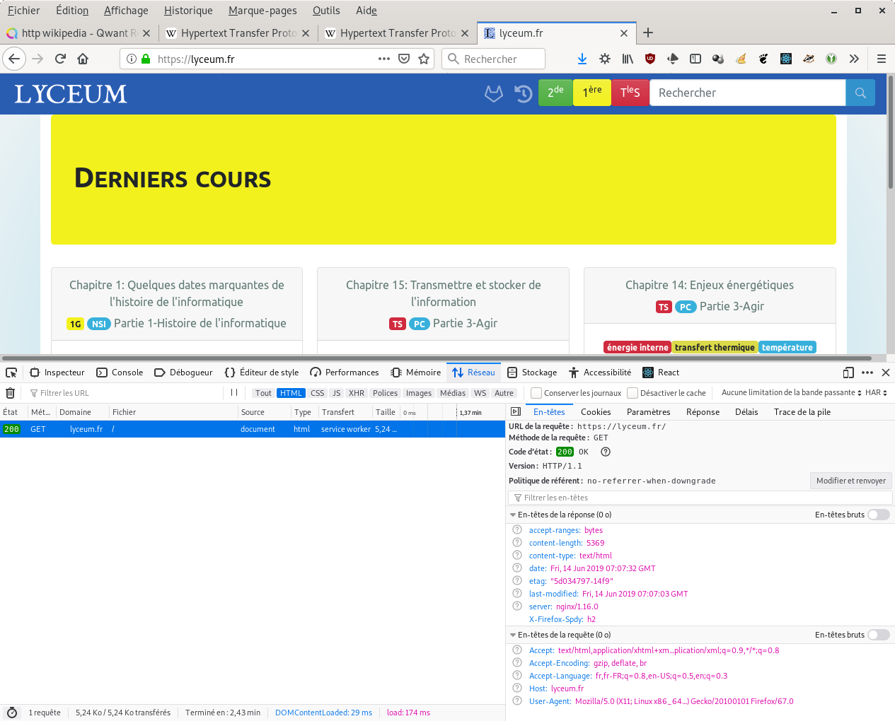
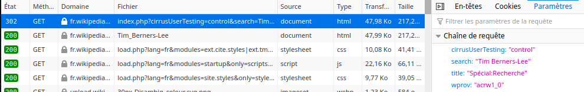

Programme Officiel
| Contenus | Capacités attendues | Commentaires |
|---|---|---|
|
Interaction client- serveur. Requêtes HTTP, réponses du serveur |
Distinguer ce qui est exécuté sur le client ou sur le serveur et dans quel ordre. Distinguer ce qui est mémorisé dans le client et retransmis au serveur. Reconnaître quand et pourquoi la transmission est chiffrée. |
Il s’agit de faire le lien avec ce qui a été vu en classe de seconde et d’expliquer comment on peut passer des paramètres à un site grâce au protocole HTTP. |

Dès la création du html par Tim Berners Lee, celui-ci a également créé le protocole
http(hypertext transfer protocol) pour normaliser l’échange des données entre le client(le
navigateur) et le serveur qui fournit les pages web.
Aujourd’hui la plupart des applications web utilisent le langage php côté serveur, mais il est
possible d’utiliser n’importe quel langage python, javascript…
HTTP
Les protocoles HTTP, ou HTTPS pour sa version sécurisée afin de crypter les informations échangées, définissent des en-têtes lors des requêtes du client et des réponses du serveur.
Tous les navigateurs permettent de les afficher en utilisant le moniteur réseau des outils de développement du navigateur(Touche F12).
Voici une requête et une réponse de la page d’accueil du site situé à l’adresse: https://lyceum.fr

Requête du client
Analysons la requête:
- Méthode:
GET
Ici on veut obtenir la page web, il existe aussi d’autres méthodes POST, PUT,
DELETE…
L’adresse URL de la page ici, c’est la page d’accueil.
- En-têtes:
Des informations sur le client.
Host: lyceum.fr
User-Agent: Mozilla/5.0 (X11; Linux x86_64; rv:67.0) Gecko/20100101 Firefox/67.0
Accept: text/html,application/xhtml+xml,application/xml;q=0.9,*/*;q=0.8
Accept-Language: fr,fr-FR;q=0.8,en-US;q=0.5,en;q=0.3
Accept-Encoding: gzip, deflate, br
Réponse du serveur
- En-têtes:
Des informations sur la réponse envoyée par le serveur, d’abord la version du protocole: HTTP/1.1.
Puis le code de réponse, ici 200 signifie que la requête a pu être correctement traitée, sinon des
codes normalisés existent 404: page non trouvée, 403 accès non autorisé,
302 redirection…
L’ensemble des codes et leur signification est disponible sur MDN.
HTTP/1.1 200 OK
server: nginx/1.16.0
date: Fri, 14 Jun 2019 07:07:32 GMT
content-type: text/html
content-length: 5369
last-modified: Fri, 14 Jun 2019 07:07:03 GMT
etag: "5d034797-14f9"
accept-ranges: bytes
X-Firefox-Spdy: h2
- Réponse:
Il s’agit tout simplement de la page html renvoyée que je résume ici, c’est en fait la page
html complète.
<!DOCTYPE html><html><head><meta charSet="utf-8"/>
...
<body>
...
</body>
L’application côté serveur
Le serveur peut fournir ce que l’on appelle un site dynamique, c’est-à-dire qu’il adapte la page renvoyée aux utilisateurs et aux paramètres de la requête.
Pour cela il faut que le serveur soit muni d’un langage de programmation comme php,
python, ou autre pour générer la page grâce à un programme.
Prenons l’exemple du site Wikipedia qui fonctionne sous php.
Lorsque vous faites une recherche à partir de n’importe quelle page de l’encyclopédie; tapez par exemple: Tim Berners-Lee, en haut à droite de Wikipedia.
Ouvrez votre moniteur réseau, avant de valider la recherche avec entrée ou un click sur les propositions d’articles, vous allez voir les requêtes suivantes qui vont s’effectuer.

Vous voyez que pour effectuer cette recherche, votre navigateur va renvoyer une requête mais pas vers une
simple page html mais vers un script php de Wikipedia en lui ajoutant des paramètres
comme s’il s’agissait d’une fonction.
https://fr.wikipedia.org/w/index.php?search=Tim+Berners-Lee&title=Sp%C3%A9cial%3ARecherche
Le script php situé sur le serveur fr.wikipedia.org au chemin
/w/index.php est exécuté avec les paramètres fournis après le signe ? et séparés par
des &, ici:
search=Tim+Berners-Lee
title=Spécial:Recherche
Après l’exécution du script php, le serveur renvoie un code de redirection 302 qui
va ensuite nous rediriger vers la page recherchée: https://fr.wikipedia.org/wiki/Tim_Berners-Lee.